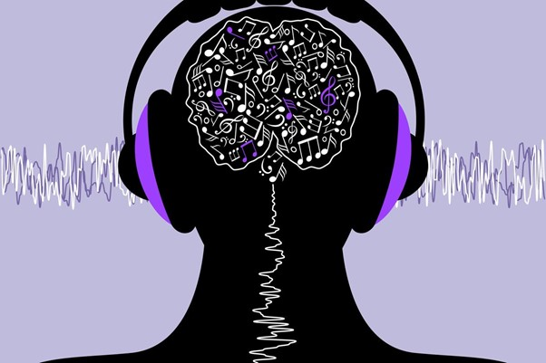

The Science of Music: How Different Genres Affect Our Emotions and Brain
Music has been an integral part of human culture for centuries, influencing our emotions, behaviors, and even our brain functions. From the soothing melodies of classical music to the energetic beats of rock and pop, different genres of music have distinct effects on our mental and emotional states. This article explores the science behind how various types of music affect our mood, cognitive functions, and overall mental health.
The Emotional Power of Music
Music is a powerful emotional trigger. When we listen to music, our brain releases dopamine, a neurotransmitter associated with pleasure and reward. This is why listening to our favorite song can make us feel good.

Different genres of music can evoke a wide range of emotions:
• Classical Music: Often associated with relaxation and tranquility, classical music has been shown to reduce stress and anxiety. Studies suggest that listening to classical music can lower cortisol levels, a hormone linked to stress.
• Rock and Heavy Metal: Contrary to the belief that these genres promote aggression, research indicates that rock and heavy metal can actually help listeners process their emotions and release pent-up feelings, leading to a sense of catharsis.
• Pop and Dance Music: With their upbeat rhythms and catchy melodies, pop and dance music are known to boost mood and energy levels. These genres are often used in fitness classes and social gatherings to create a lively and positive atmosphere.
• Jazz and Blues: These genres are often linked to emotional depth and introspection. Listening to jazz and blues can evoke feelings of nostalgia, melancholy, and even joy, depending on the context and the listener's personal experiences.
Cognitive Benefits of Music
Beyond its emotional impact, music also has significant effects on cognitive functions.
Different genres can enhance various aspects of brain activity:
• Classical Music: Often referred to as the "Mozart effect," listening to classical music has been shown to improve spatial-temporal reasoning, which is crucial for tasks such as problem-solving and abstract thinking.
• Instrumental Music: Genres like ambient, electronic, and instrumental jazz can enhance concentration and productivity. These types of music provide a background that is stimulating without being distracting, making them ideal for studying or working.
• Hip-Hop and Rap: These genres, with their complex lyrics and rhythms, can enhance verbal skills and cognitive flexibility. Engaging with the intricate wordplay and storytelling in rap music can stimulate areas of the brain involved in language processing and creative thinking.
The Neuroscience Behind Music's Impact

The effects of music on our emotions and brain can be traced to several neural mechanisms:
• Auditory Cortex Activation: When we listen to music, the auditory cortex processes the sound, analyzing aspects such as pitch, rhythm, and melody.
• Limbic System Engagement: The limbic system, which includes structures like the amygdala and hippocampus, is involved in emotional processing. Music can activate these areas, leading to emotional responses.
• Mirror Neuron System: This system allows us to empathize with the emotions conveyed in music. When we hear a sad song, our brain mirrors the emotions expressed, making us feel a similar way.
• Neuroplasticity: Regular exposure to music can lead to long-term changes in the brain's structure and function. Musicians, for example, often have enhanced connectivity in areas related to auditory processing and motor control.